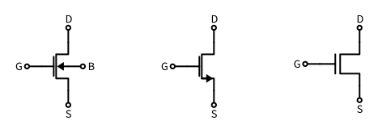
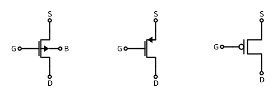
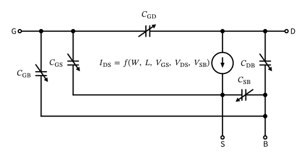
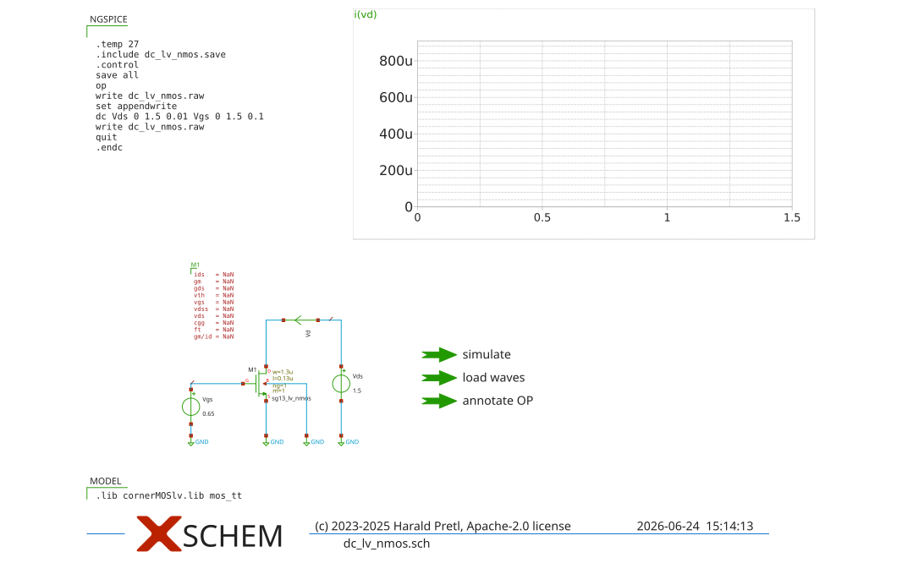
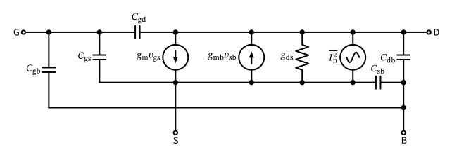
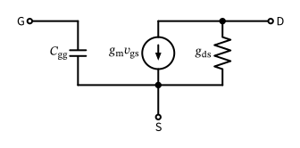
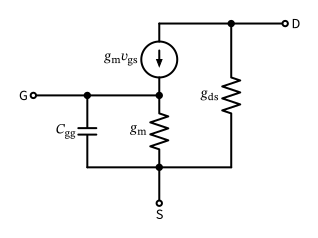

Analog (Integrated) Circuit Design
Figure 1: Circuit symbols for different voltage-controlled amplifiers (from left to right: MOSFET, bipolar junction transistor, junction FET, triode).
MOSFET Background
Strictly speaking, the drain-source current of a MOSFET is controlled by the voltage between gate and bulk (\(V_\mathrm{GB}\)) and the voltage between drain and source (\(V_\mathrm{DS}\)). Since bulk is often connected to source anyway, and many circuit designers historically were already familiar with the operation of the bipolar junction transistor (BJT), it is common to consider the gate-source voltage (besides the drain-source voltage) as the controlling voltage.
This focus on gate-source suggests that the source is special compared to the drain. In a typical physical MOSFET, however, the drain and source are constructed exactly the same (i.e., the MOSFET is a symmetric device), and which terminal is drain, and which terminal is source, is only determined by the applied voltage potentials, and can change dynamically during operation (think of a MOSFET operating as a switch… which side is the drain, which side is the source?).
Unfortunately, this focus on a “special” source has made its way into some MOSFET compact models. The model that is used in SG13G2 luckily uses the PSP model, which is formulated symmetrically with regards to drain and source, and is thus very well suited for analog and RF circuit design. For a detailed understanding of the PSP model please refer to the model documentation.

Figure 2: Circuit symbol of n-channel MOSFET.

Figure 3: Circuit symbol of p-channel MOSFET.
MOSFET Symbol
Looking at the MOSFET symbols in Figure 2 and Figure 3, you might have noticed that the left and the right symbols are symmetric for the drain and source terminals, while the middle symbol shows an arrow in the source connection.
This is a common “error” in many important textbooks and online resources (Razavi 2017; Gray et al. 2009; Sansen 2006), and it is important to be aware of this. The drain and source of a MOSFET are (usually) symmetric, and the current flow can be reversed by changing the applied voltages (and then also drain and source swap; generally, for an NMOS, the connection with the higher potential is the drain, the one with the lower potential is the source. For a PMOS, the situation is inverted).
The symbol in the middle of Figure 2 and Figure 3 is thus misleading, because is suggests that the source is special and that the current can only flow in one direction. This is not the case, and it is important to be aware of this when designing circuits, especially when using MOSFETs as switches. As many symbols are drawn this way, we will also use this symbol in this course (and the resemblance to a bipolar junction transistor is intentional), but please be aware of the fact that the drain and source are symmetric, and the current can flow in both directions depending on the bias voltages!

Figure 4: The MOSFET large-signal model.
Mathematical Notation
Throughout this material, we will largely stick to the following notation standardized by IEEE:
A Comment on Active and Passive Devices and Linear vs. Nonlinear
In contrast to the passive devices resistor \(R\), inductor \(L\), and capacitor \(C\), which can only dissipate energy (and are often treated in a linearized fashion), transistors (like the MOSFET) are called “active”, since they can provide signal power amplification. However, transistors can not create energy out of thin air, but merely convert dc energy (supplied by the power supply) into ac energy (Manley and Rowe 1956). They have to have nonlinear transfer characteristics to do this, but it has been shown that a piecewise-linear characteristic is sufficient (Jakoby 2022). This is very good news for circuit design, as usually we strive for linear behaviour!

Figure 5: Testbench for NMOS dc sweeps.
MOSFET Simulation Model
For modelling the MOSFET behavior in a circuit simulator like ngspice different models are available. Some of these models have been widely adopted, like the BSIM (Berkeley Short-channel IGFET Model) or PSP (Philips Penn State) model. The PSP model version 103.6 is used in the IHP SG13G2 PDK for the LV and HV MOSFET. This model has several advantages:
The PSP 103.6 model documentation can be found here. In chapter 8 the dc operating point output of the model (these parameters can be queried in ngspice) is explained, which is helpful to interpret the simulation output.
Exercise: MOSFET Investigation
Please try to execute the following steps and answer these questions:
sg13_lv_nmos:
\[ g_\mathrm{m}= \frac{\partial I_\mathrm{D}(V_\mathrm{GS}, V_\mathrm{DS}, V_\mathrm{SB})}{\partial V_\mathrm{GS}}, \]
\[ g_\mathrm{ds}= \frac{\partial I_\mathrm{D}(V_\mathrm{GS}, V_\mathrm{DS}, V_\mathrm{SB})}{\partial V_\mathrm{DS}} \]
\[ g_\mathrm{mb}= -\frac{\partial I_\mathrm{D}(V_\mathrm{GS}, V_\mathrm{DS}, V_\mathrm{SB})}{\partial V_\mathrm{SB}} = \frac{\partial I_\mathrm{D}(V_\mathrm{GS}, V_\mathrm{DS}, V_\mathrm{BS})}{\partial V_\mathrm{BS}} \]

Figure 6: The MOSFET small-signal model.
Figure 7: The MOSFET small-signal model when source and bulk are shorted.
\[ \overline{I_\mathrm{n}^2} = 4 k T \gamma g_\mathrm{d0}, \tag{1}\]
MOSFET Triode and Saturation Region
Sometimes we will refer to different operating modes of the MOSFET like “saturation” or “triode.” Generally speaking, when the drain-source voltage is small, then the MOSFET acts as a voltage-controlled resistor (since the impact of both \(V_\mathrm{GS}\) and \(V_\mathrm{DS}\) on \(I_\mathrm{D}\) is large), and this mode of operation we call “triode” mode.
When the drain-source voltage \(V_\mathrm{DS}\) is increased, at some point the drain-source current saturates and is only a weak function of the drain-source voltage, while still being well controlled by \(V_\mathrm{GS}\). This mode is called “saturation” mode.
As you can see in the large-signal investigations, these transitions happen gradually, and it is difficult to define a precise point where one operating mode switches to the other one. In this sense we use terms like “triode” and “saturation” only in an approximate sense.

Figure 8: The MOSFET small-signal basic pi-model.

Figure 9: The MOSFET small-signal basic T-model.
A metric which is useful to assess the speed of a MOSFET is the so-called transit frequency \(f_\mathrm{T}\). It is defined as the frequency where the small-signal current gain (output current divided by the input current) of a MOSFET driven by a voltage-source at the input and loaded by a voltage source at the output drops to unity (reaches one). It can easily be derived using the simplified MOSFET small-signal model of Figure 7 by driving it with a voltage source and shorting the output to ground (neglecting the feed-forward current introduced by \(C_\mathrm{gd}\)): \[ \omega_\mathrm{T} = 2 \pi f_\mathrm{T} \approx \frac{g_\mathrm{m}}{C_\mathrm{gg}} = \frac{g_\mathrm{m}}{C_\mathrm{gs}+ C_\mathrm{gd}+ C_\mathrm{gb}}. \tag{2}\] This frequency is an extrapolated frequency where the MOSFET operation is dominated by several second-order effects (hence Equation 2 is not valid any longer). A rule-of-thumb is to use a MOSFET up to approximately \(f_\mathrm{T} / 10\). In any case, \(f_\mathrm{T}\) is a proxy of the speed of a MOSFET; in other words, how much input capacitance \(C_\mathrm{gg}\) is incurred when creating a certain \(g_\mathrm{m}\).
Exercise: MOSFET Transit Frequency
As a home exercise, try to derive Equation 2 starting from Figure 7. This is a useful exercise to verify your understanding of the small-signal model.
Exercise: MOSFET Small-Signal Parameters
Please try to execute the following steps and answer the following questions:
sg13_lv_nmos:
sg13_lv_pmos:
Note 1: Maxwell Capacitance Matrix
A Maxwell capacitance matrix (Maxwell 1873) provides the relation between voltages on a set of conductors and the charges on these conductors. For a given conductor set with \(N\) conductors (and thus \(N\) terminals) the relation is \[ \mathbf{Q} = \mathbf{C} \cdot \mathbf{V} \] where \(\mathbf{Q}\) is a vector of the charges on the \(N\) conductors, \(\mathbf{C}\) is a \(N \times N\) capacitance matrix, and \(\mathbf{V}\) is the potential vector. In the case of two conductors and physical capacitances between them, \(\mathbf{C}\) is given by \[ \mathbf{C} = \begin{pmatrix} C_{11} + C_{12} & -C_{12} \\ -C_{12} & C_{12} + C_{22} \\ \end{pmatrix} \] where \(C_{11}\) and \(C_{22}\) are the auto capacitances of the conductors towards infinity (ground), and \(C_{12} = C_{21}\) is the mutual capacitance between the two conductors. Note that these are the physical capacitances, and that they are therefore not identical to the entries of \(\mathbf{C}\): a diagonal entry of \(\mathbf{C}\) is the sum of all capacitances touching a node (\(\partial Q_1 / \partial V_1 = C_{11} + C_{12}\)), whereas an off-diagonal entry is negative (\(\partial Q_1 / \partial V_2 = -C_{12}\)).
Using the above equation to calculate \(Q_1\) (the charge on conductor \(1\)) results in \[ Q_1 = ( C_{11} + C_{12} ) V_1 - C_{12} V_2 = C_{11} (V_1 - 0) + C_{12} (V_1 - V_2) \] which is the expected result.
Such a Maxwell capacitance formulation is also used in the MOSFET model to describe the charge at a terminal as a function of potential at another terminal. So, \[ C_\mathrm{GD}= \frac{\partial Q_\mathrm{G}}{\partial V_\mathrm{D}} \] or \[ C_\mathrm{GG}= \frac{\partial Q_\mathrm{G}}{\partial V_\mathrm{G}} \] with \(Q_\mathrm{G}\) the charge at terminal G in response to either \(V_\mathrm{D}\) or \(V_\mathrm{G}\). Note that in a MOSFET, generally \(C_{xy} \ne C_{yx}\)!
This also explains the negative capacitance values that a simulator sometimes reports (see the exercise above): the off-diagonal entries of a Maxwell capacitance matrix carry a negative sign by construction, so a reported \(C_\mathrm{GD}\) of, e.g., \(-1\,\text{fF}\) simply means a physical coupling capacitance of \(1\,\text{fF}\) between gate and drain.